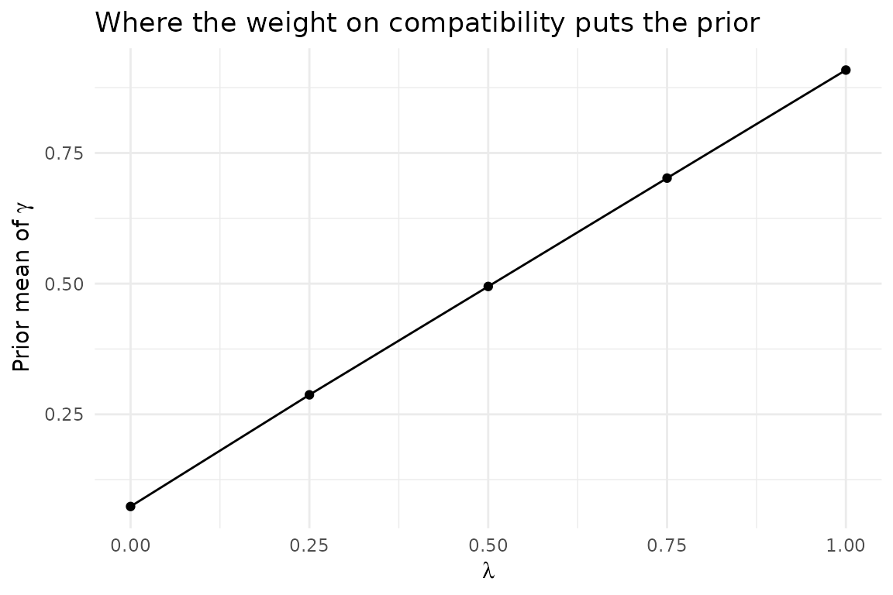
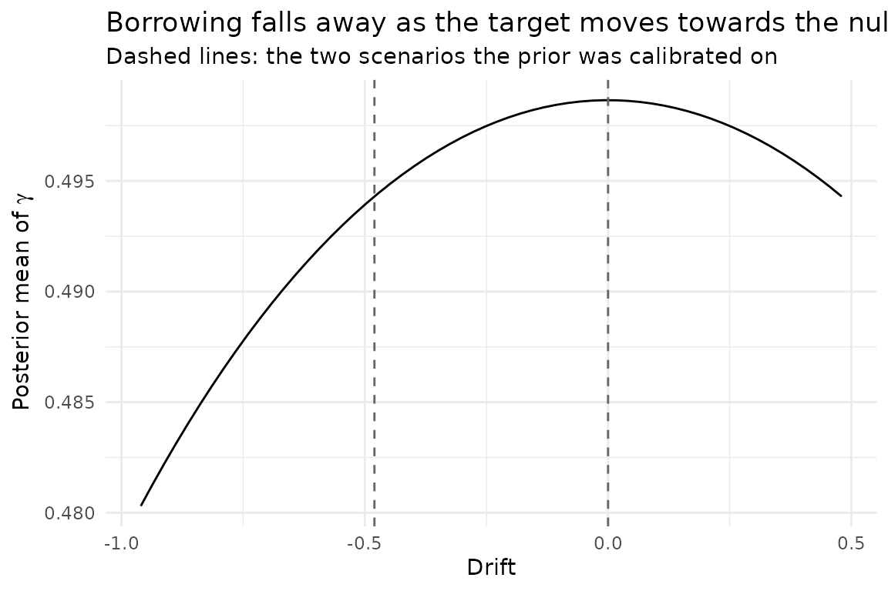

Introduction
The normalised power prior of Pawel et al (2023) discounts the source likelihood by a power parameter and places a prior on it. The NPP vignette takes that prior from the configuration: a mean and a standard deviation, chosen in advance and used for every scenario in a run.
This vignette describes NPP_KL, which calibrates the
prior instead. The two methods share everything downstream of it — the
same joint and marginal posteriors, the same quadrature mixture, the
same summaries and effective sample sizes. Only where
and
come from differs.
The motivation is that a prior fixed in advance cannot express when to borrow. Whether a given source/target discrepancy is even distinguishable from noise depends on how precise the target trial is, so a prior that ignores the target sample size cannot say “borrow when the two studies agree, and stop borrowing at a discrepancy I would not tolerate”. The calibration states that intention directly and solves for the shape parameters it implies.
The criterion
Write and for the shape parameters, to keep them apart from the significance level and the type I error. For a hypothetical target estimate , the marginal posterior of the discounting parameter is
with the standard error the target design implies — not the standard error of any particular replicate.
Two hypothetical estimates stand for the two situations the prior has to tell apart. Under perfect compatibility the target estimate falls on the source estimate,
and at the maximum tolerable discrepancy it falls away from it, on the side of the null,
Writing and for the two posteriors these imply, the calibration minimises
puts its mass near one, so the first term asks the posterior to borrow when the studies agree; puts its mass near zero, so the second asks it not to borrow at the discrepancy the user has declared intolerable. says which of the two matters more.
Defaults
| Setting | Default | Meaning |
|---|---|---|
lambda_kl |
0.5 |
weight on the compatible term |
c_target |
10 |
shape of both reference Beta distributions |
d_mtd_rule |
"source_to_null" |
|
d_mtd_multiplier |
1 |
the
above; 0.5 is the sensitivity setting |
beta_parameter_bounds |
c(0.05, 100) |
bounds on and |
An explicit numeric d_mtd overrides the rule.
benefit_sign is derived from the case study’s
null_space: "left" gives
,
because the trial succeeds when the effect is large, and
"right" gives
.
It can also be set explicitly.
What the calibration does and does not read
The hyperparameters are calibrated from two hypothetical scenarios, using the expected target standard error. Neither hypothetical estimate is the estimate of any simulated replicate, and and are not posteriors from a replicate — they are the posteriors a replicate would have produced had it landed exactly on the source estimate, or exactly at the maximum tolerable discrepancy.
The calibration therefore belongs to the scenario. It is computed
once, before any replicate is generated, and every replicate of that
scenario is analysed under the same prior; only the target estimate and
its standard error vary between them. In a simulation this happens in
Model$calibrate_for_design(), which the drivers call once
per scenario.
Load a case study
set.seed(42)
case_study_config <- yaml::yaml.load_file(
system.file("conf/case_studies/belimumab.yml", package = "BExTE")
)
source_data <- ObservedSourceData$new(case_study_config)Calibrate the prior
calibrate_npp_kl() is the calibration on its own,
without a model around it. The expected target standard error is the one
the design implies.
target_sample_size_per_arm <- as.integer(case_study_config$target$total / 2)
se_target_expected <- case_study_config$target$standard_error
calibration <- calibrate_npp_kl(
theta_source = source_data$treatment_effect_estimate,
se_source = source_data$standard_error,
se_target_expected = se_target_expected,
theta_null = case_study_config$theta_0,
benefit_sign = BExTE:::benefit_sign_from_null_space(case_study_config$null_space)
)
data.frame(
quantity = c("alpha_gamma", "beta_gamma", "prior mean", "prior sd",
"d_MTD", "K(a, b)"),
value = signif(c(
calibration$alpha_gamma, calibration$beta_gamma,
calibration$alpha_gamma / (calibration$alpha_gamma + calibration$beta_gamma),
sqrt(calibration$alpha_gamma * calibration$beta_gamma /
((calibration$alpha_gamma + calibration$beta_gamma)^2 *
(calibration$alpha_gamma + calibration$beta_gamma + 1))),
calibration$d_mtd, calibration$objective_value
), 4)
)## quantity value
## 1 alpha_gamma 4.9250
## 2 beta_gamma 5.0320
## 3 prior mean 0.4947
## 4 prior sd 0.1510
## 5 d_MTD 0.4801
## 6 K(a, b) 4.8460The two terms pull in opposite directions, so it is worth seeing each on its own. With all the weight on compatibility the criterion is minimised by making the posterior of equal , and with none of it the answer moves towards .
lambda_values <- seq(0, 1, by = 0.25)
sweep <- do.call(rbind, lapply(lambda_values, function(lambda) {
fit <- calibrate_npp_kl(
theta_source = source_data$treatment_effect_estimate,
se_source = source_data$standard_error,
se_target_expected = se_target_expected,
theta_null = case_study_config$theta_0,
benefit_sign = BExTE:::benefit_sign_from_null_space(case_study_config$null_space),
lambda_kl = lambda
)
data.frame(
lambda = lambda,
alpha_gamma = fit$alpha_gamma,
beta_gamma = fit$beta_gamma,
prior_mean = fit$alpha_gamma / (fit$alpha_gamma + fit$beta_gamma)
)
}))
sweep## lambda alpha_gamma beta_gamma prior_mean
## 1 0.00 0.6710155 8.4335687 0.07370084
## 2 0.25 2.6145377 6.4850561 0.28732466
## 3 0.50 4.9254121 5.0317320 0.49466112
## 4 0.75 7.4183202 3.1492847 0.70198690
## 5 1.00 9.9383468 0.9982855 0.90872094
ggplot(sweep, aes(x = lambda, y = prior_mean)) +
geom_line() +
geom_point() +
labs(
x = expression(lambda),
y = expression(paste("Prior mean of ", gamma)),
title = "Where the weight on compatibility puts the prior"
) +
theme_minimal()
Build the model
The model is created like any other, and then calibrated to the design. Until it is, it has no prior on the power parameter and refuses to run inference — that is deliberate, so a model used outside a simulation driver cannot quietly analyse under a placeholder.
method_parameters <- list(
initial_prior = list("noninformative"),
lambda_kl = list(0.5),
c_target = list(10),
d_mtd_rule = list("source_to_null"),
d_mtd_multiplier = list(1)
)
model <- Model$new()$create(
case_study_config = case_study_config,
method = "NPP_KL",
method_parameters = method_parameters,
source_data = source_data
)
target_data <- TargetDataFactory$new()$create(
source_data = source_data,
case_study_config = case_study_config,
target_sample_size_per_arm = target_sample_size_per_arm,
control_drift = 0,
treatment_drift = 0,
summary_measure_likelihood = case_study_config$summary_measure_likelihood
)
model$calibrate_for_design(target_data)
c(p = model$p, q = model$q)## p q
## 4.899562 5.008803Borrowing as a function of drift
Under the calibrated prior, the posterior mean of falls as the target estimate moves away from the source estimate. The prior itself does not change along this curve: it was fixed by the design before any of these estimates was considered.
observed_target_data <- ObservedTargetData$new(
treatment_effect_estimate = case_study_config$target$treatment_effect,
treatment_effect_standard_error = se_target_expected,
target_sample_size_per_arm = target_sample_size_per_arm,
summary_measure_likelihood = case_study_config$summary_measure_likelihood
)
target_treatment_effect_values <- seq(
source_data$treatment_effect_estimate - 2 * calibration$d_mtd,
source_data$treatment_effect_estimate + calibration$d_mtd,
length.out = 60
)
posterior_means <- vapply(target_treatment_effect_values, function(estimate) {
observed_target_data$sample$treatment_effect_estimate <- estimate
model$inference(observed_target_data)
model$posterior_parameters$power_parameter_mean
}, numeric(1))
plot_data <- data.frame(
drift = target_treatment_effect_values - source_data$treatment_effect_estimate,
power_parameter_mean = posterior_means
)
ggplot(plot_data, aes(x = drift, y = power_parameter_mean)) +
geom_line() +
geom_vline(
xintercept = c(0, -calibration$d_mtd),
linetype = "dashed", colour = "grey40"
) +
labs(
x = "Drift",
y = expression(paste("Posterior mean of ", gamma)),
title = "Borrowing falls away as the target moves towards the null",
subtitle = "Dashed lines: the two scenarios the prior was calibrated on"
) +
theme_minimal()
Reported quantities
In a simulation, every result row carries the calibration alongside
the usual posterior summaries, inside posterior_parameters:
alpha_gamma, beta_gamma,
prior_gamma_mean, prior_gamma_sd,
d_mtd, se_target_expected,
kl_objective_value and calibration_converged.
They are constant across the replicates of a scenario, which is what
makes it checkable that the prior really was fixed before the data were
seen.